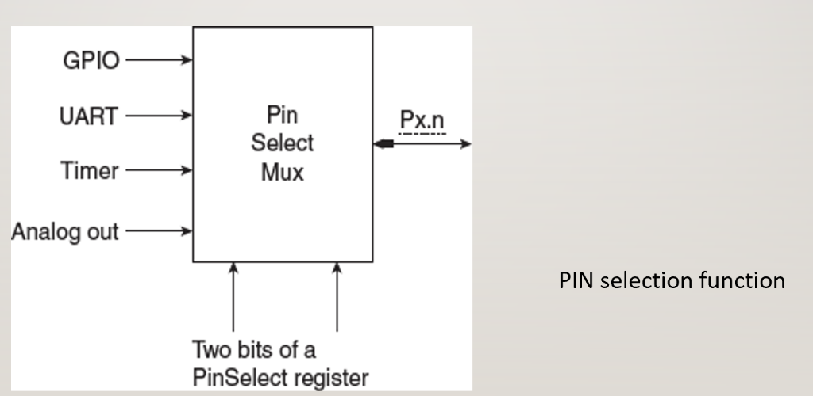
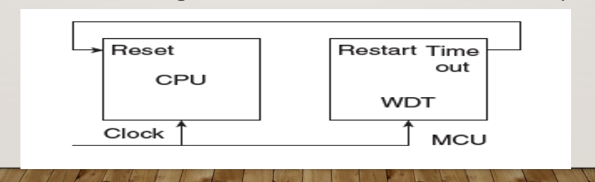
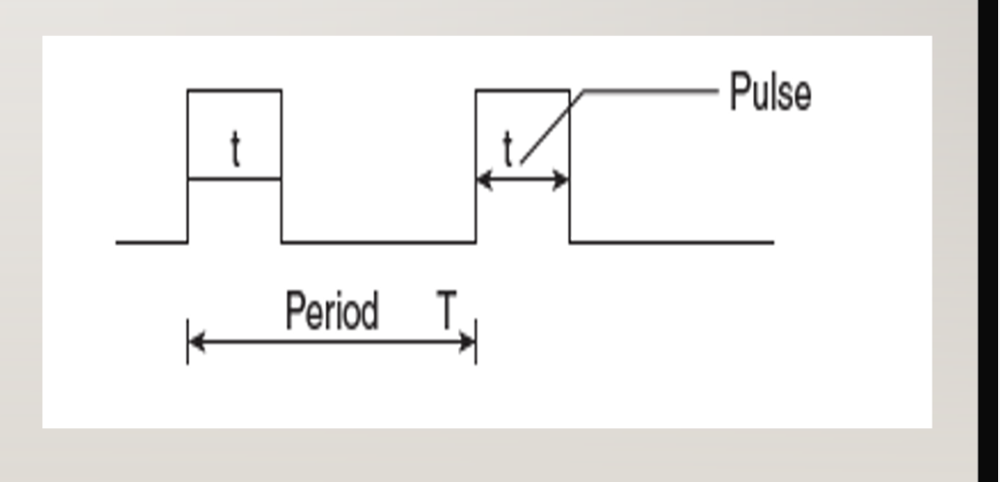
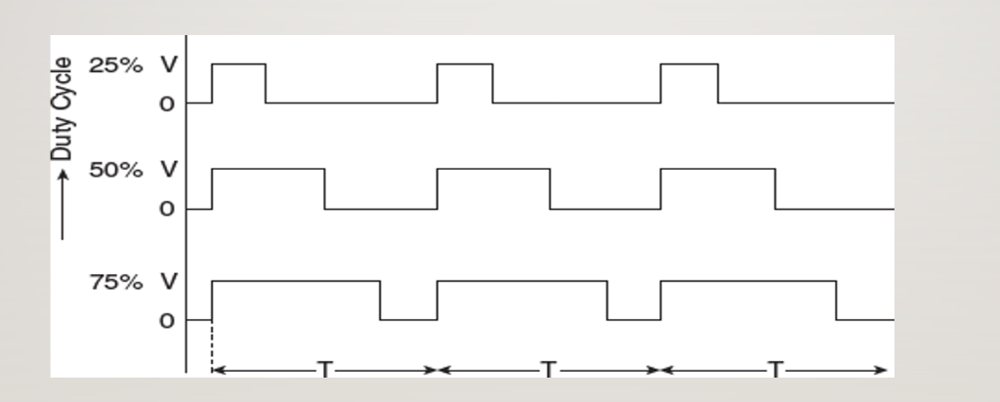
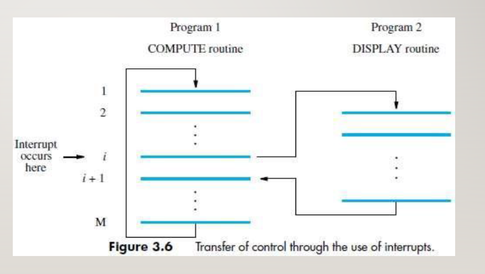

🎓 MSRIT/VTU Expert Faculty Study Portal | Conceptual Learning using NPTEL video lectures and problem-solving sessions
An embedded system is a specialized, computer-controlled device built to perform a single dedicated function under strict physical, computational, and electrical constraints. Unlike general-purpose PCs which run various arbitrary applications (browsers, word processors), an embedded system runs a single pre-programmed software task. Real-world examples include automotive ABS, smart grids, pacemakers, and home appliances.
The Engineering Design Process of an embedded system is a structured, step-by-step development cycle:
Embedded System Life-Cycle Block Diagram: Draw a loop starting with Requirements -> Specification -> Architecture Design. This splits into parallel paths for Hardware Development (schematics, PCB routing) and Software Development (coding, compiling), which merge back at the System Integration & Verification phase.
• SEE 2023 Q2(a): With a block diagram, explain the characteristics of an embedded system. (8 Marks)
• SEE 2024 Q2(a): Discuss the characteristics of an embedded system, also describe the applications of embedded systems. (8 Marks)
How to write: Students often confuse the block diagram of the system with the flowchart of the design process. If asked for the design process, draw the engineering loop. Under characteristics, write down these headings: Single-Functioned, Tightly-Constrained, Reactive/Real-Time, Highly Reliable. **viva focus**: What is hardware-software co-design? (Developing hardware and software concurrently to meet constraints). Memory Trick: Design Process = R.S.A.C.I. (Requirements, Specification, Architecture, Component, Integration).
Embedded systems are single-purpose devices designed via a structured loop of requirements, specification, concurrent HW/SW development, and integration testing.
Every embedded system is defined by its distinct operational traits. Because they are deployed in environments like cars, airplanes, or inside human bodies, they must behave reliably and react immediately to external inputs without delays.
General System Layout: Draw a block diagram showing input Sensors (temperature, pressure) feeding into the Microcontroller/Processor Core. The MCU reads from Memory (Flash/RAM) and sends commands to Actuators/Drivers (motors, displays) via Interface Circuits.
• SEE 2023(O) Q1(b): List the various characteristics of an Embedded system. Also, mention few applications of embedded systems. (6 Marks)
Always classify applications into domains: Automotive (Airbags, ABS), Medical (Pacemakers), Industrial (PLCs, robotics), and Consumer (Smart watches, microwave ovens). Common mistake: Forgetting to list constraints (size, cost, power, time). Memory Trick: Acronym S.P.A.R.T.A. (Single-function, Power-efficient, Actuator-driven, Real-time, Time-constrained, Accurate).
Embedded systems perform dedicated, real-time reactive tasks under physical and electrical constraints with high safety and reliability standards.
The processing core of an embedded system is selected based on performance, cost, and complexity requirements. There are five major categories:
Use a structured table to compare MPU and MCU on parameters like: On-chip Peripherals, Cost, Size, Power Consumption, and Target Applications. viva question: What does MAC stand for in DSPs? (Multiply-Accumulate, performs A = B * C + D in 1 cycle).
Embedded hardware ranges from versatile MCUs (integrated on one chip) and MPUs (requires external chips), to math-specialized DSPs, custom ASICs, and reconfigurable FPGAs.
The core structural dispute in computer architecture is how instructions are executed: - **CISC (Complex Instruction Set Computer)** focuses on reducing the number of instructions per program. It provides highly complex, variable-length instructions that perform multi-cycle operations directly on memory. This reduces program size but requires complex hardware decoders and microcode in the CPU. - **RISC (Reduced Instruction Set Computer)** focuses on single-cycle execution of simple instructions. Instructions are uniform in length and act strictly on internal registers (load-store structure). This simplifies CPU hardware, increases clock frequency, and relies on the software compiler to optimize code efficiency.
• SEE 2025 Q1(a): List and explain the four major design rules behind RISC processors implementation. (8 Marks)
• SEE 2024 Q1(a): Discuss the four major design rules that are taken into considerations in implementation of RISC systems. (8 Marks)
• MAKEUP2023 Q1(a): List and analyze the features of RISC processors that broke with traditional design techniques used in CISC based processors. (8 Marks)
• SEE 2023(O) Q1(c): Discuss the four major design rules implemented on RISC design. Justify how CISC emphasizes on hardware complexity and RISC emphasizes on compiler complexity. (8 Marks)
Golden Exam Topic! Memorize the 4 major RISC design rules: (1) Single-cycle instruction execution, (2) Fixed 32-bit instruction format, (3) Load-Store architecture, (4) Large register bank. Write a clean instruction example comparison (CISC memory-to-memory vs RISC register-to-register). Memory Trick: RISC rules = L.I.M.S. (Load-store, Instructions are fixed, Maximize registers, Single-cycle execution).
CISC uses complex, variable-width, multi-cycle instructions to save program memory. RISC uses simple, fixed-width, single-cycle, register-based instructions to simplify CPU hardware and increase clock speeds.
Although the ARM architecture is based on the RISC philosophy, it is not a pure RISC core. Pure RISC architectures require high clock frequencies and large program memories. In battery-powered, cost-sensitive embedded systems, memory is expensive and power is limited. Therefore, the **ARM Design Philosophy** introduces core hardware modifications to improve code density and execution efficiency without requiring huge program memories.
ADDEQ). It only executes if the CPSR status flags match, avoiding branch instructions that flush the instruction pipeline.• SEE 2025 Q1(c) / SEE 2023 Q1(c): Explain how the ARM instruction set differs from the pure RISC instruction set? (6 Marks)
• SEE 2023(O) Q2(a): Discuss on how the ARM instruction set differs from the pure RISC definition in several ways that make the ARM instruction set suitable for embedded applications. (6 Marks)
Highlight the **4 ARM Deviations** in bold bullet points: (1) Barrel Shifter on ALU input, (2) Thumb 16-bit compressed state, (3) Conditional execution of all instructions, (4) LDM/STM instructions. Common mistake: Forgetting to explain *why* ARM deviates (to fit embedded power, cost, and memory constraints). Memory Trick: ARM departs via: I.T.C.M. (Inline shifting, Thumb set, Conditional suffixes, Multi-register loads).
ARM modifies pure RISC by adding an inline barrel shifter, Thumb 16-bit state, conditional execution, and LDM/STM instructions to maximize code density and power efficiency.
A **System-on-Chip (SoC)** is the integration of an entire computer system onto a single piece of silicon die. Instead of assembling a CPU chip, RAM chips, and serial interface chips on a PCB, an SoC combines all of these modules on one microchip, reducing physical size, signal propagation delay, electrical noise, and power consumption.
• SEE 2025 Q2(a): Explain the internal components of system on chip. Write diagram. (8 Marks)
• SEE 2023 Q1(b): With a neat diagram, explain the internal components of a typical Microcontroller unit. (6 Marks)
• SEE 2023(O) Q2(b): Discuss with a neat diagram, the Internal components of a typical MCU that works on SOC. (8 Marks)
Always draw the block diagram! Show the CPU linked to high-speed system bus (AHB), linked to SRAM and Flash, with a bus bridge leading to a peripheral bus (APB) containing GPIO, Timers, UART, ADC, and DAC. Label every component block clearly to score full 8/8 marks! **viva question**: What is the benefit of a bus bridge? (It isolates slow peripheral operations from high-speed memory-CPU traffic, saving power).
An SoC integrates the CPU, RAM, Flash, PLL clock multipliers, timers, and peripherals onto a single silicon block linked via AMBA system buses.
An embedded system can run either **bare-metal** (firmware runs directly on the CPU hardware in an infinite loop) or under an **Operating System (OS)**. For complex devices, we use a **Real-Time Operating System (RTOS)** rather than a General Purpose OS (GPOS like Windows/Linux). An RTOS is designed to guarantee that critical tasks execute within strict, deterministic time limits (deadlines), utilizing highly predictive priority-based task scheduling.
Embedded systems connect to external networks using diverse **Connectivity Standards**: - **USB:** High-speed point-to-point peripheral communication. - **Ethernet:** standard wired TCP/IP network links. - **CAN (Controller Area Network):** A robust, differential-signal vehicle bus standard designed for noise-heavy automotive environments. - **Wireless:** Bluetooth, Wi-Fi, and ZigBee for low-power IoT networks.
RTOS guarantees deterministic task execution within deadlines, while protocols like USB, Ethernet, and CAN provide robust connectivity interfaces for embedded systems.
Microcontroller chips are physically housed in packages (like 64-pin LQFP) with limited physical pins. To pack maximum functionality into a tiny chip size, modern MCUs use **Pin Multiplexing**. This means a single physical pin can be configured to perform up to 4 different functions (e.g. general-purpose GPIO, serial UART Tx, PWM output, or analog ADC input). The active function of each pin is determined by programming specialized software registers called **PINSEL** (Pin Select) registers during system startup.
PINSEL0, PINSEL1, and PINSEL2.• SEE 2024 Q1(b): With an appropriate diagram, discuss the PIN configuration of an MCU that shows the set of pins associated with each of the peripherals and its functionalities. (8 Marks)

How to write: Draw a schematic block diagram representing the MCU package. Group the pins into conceptual clusters (Clock/XTAL, Reset, Port 0 pins P0.0-P0.31, Port 1 pins, Power/VSS, Analog VREF) with arrows, rather than trying to draw all 64 pins in order! This is highly legible and scores top marks! **viva question**: What is the default function of multiplexed pins upon reset? (All pins default to general-purpose digital input GPIO mode to ensure electrical safety).
Pin multiplexing allows a single pin to serve multiple roles, programmed via PINSEL registers to optimize package size and physical layouts.
Digital microchips are highly sensitive to voltage instability. When an embedded system powers up, the voltage rises slowly, which can cause logic gates to enter undefined states and execute random instructions. To secure hardware sanity, microcontrollers incorporate three reset modules: - Power-On Reset (POR): A hardware delay circuit that holds the CPU RESET pin low (active reset state) when power is first applied, releasing it only after the main voltage rail has stabilized. - Brown-Out Detector (BOD): Continuously monitors voltage levels. If the power supply drops below a safe operational limit (a brownout), the BOD triggers a reset to prevent memory data corruption. - Watchdog Timer (WDT): A hardware timer initialized to a specific interval. The software must periodically clear (feed) the watchdog in a regular loop. If the software crashes or freezes, the feed sequence stops, the WDT timer overflows, and it triggers a hard reset to reboot the processor.

• SEE 2023 Q2(c): Describe the working of power on reset signal with a circuit diagram and waveform. (6 Marks)
• MAKEUP2023 Q2(b): List and explain three types of Reset in a typical MCU. (7 Marks)
Always draw the RC charging delay circuit and exponential wave curve for Power-On Reset. Write down the WDT "Feed Sequence" (kicking the dog) in bullet points: (1) Write 0xAA to WDFEED, (2) Write 0x55 to WDFEED in sequence. If this exact two-step byte sequence is violated, a reset is triggered instantly. Memory Trick: Resets protect systems from: P.B.W. (Power startups, Brownout drops, Watchdog hangs).
SoC safety reset circuits (POR, BOD, WDT) ensure robust, safe execution, protecting the processor from startup rises, voltage brownouts, and infinite code hangs.
A **Timer/Counter** is a programmable counter register. If it increments on every clock cycle of the internal system clock, it behaves as a timer (measuring exact time delays). If it increments in response to pulses applied on an external input pin, it behaves as a counter (counting external events).
A **Pulse Width Modulator (PWM)** is a specialized timer module designed to control external analog loads (like motors or LEDs). Since digital microcontrollers can only output logic HIGH (3.3V) or logic LOW (0V), they cannot naturally output intermediate analog voltages. A PWM switches a digital output pin ON and OFF extremely fast. The average voltage delivered depends on the **Duty Cycle** (the percentage of time the signal is HIGH relative to the total period).


• MAKEUP2023 Q1(b): List and explain the three types of timers in a microcontroller unit. (7 Marks)
• SEE 2023(O) Q1(a): List out the steps involved in the working of an interval timer. (6 Marks)
• SEE 2024 Q2(c): What is the relevance of duty cycle? Define the duty cycle to showcase for the 50% of its usage. (6 Marks)
• SEE 2023(O) Q2(c): Briefly discuss on Pulse Width Modulator, a separate module by the virtue of its functionality that are used in most of the MCU’s. (6 Marks)
Timers use prescalers and match registers to measure time or count pulses. PWM varies the high pulse duration (Duty Cycle) to simulate variable analog outputs for motor or LED controls.
The PLL in the LPC2148 takes an input crystal frequency (F_OSC) and multiplies it to produce the processor clock (cclk). To maintain physical stability, the internal Current Controlled Oscillator (FCCO) must run at a very high speed (156MHz to 320MHz). Thus, we use a multiplier M and a divider P:
Where:
• M: PLL Multiplier (1 to 32), stored in PLLCON/PLLCFG registers as (M - 1).
• P: PLL Divider (1, 2, 4, 8), stored in registers as encoded bits (00 for P=1, 01 for P=2, 10 for P=4, 11 for P=8).
For a single-edge PWM channel configured on LPC2148 Match registers:
The PWM output pin remains HIGH at the start of a cycle, and toggles LOW when the timer match matches the value in the configured channel register. The duty cycle is calculated as:
In bare-metal C programming, we use a delay loop to block execution. Let's calculate the exact loop limit for a 1ms delay on a 60MHz processor clock:
void delay_1ms() {
unsigned int count = LIMIT;
while(count > 0) {
count--;
}
}Each iteration of the loop (decrement and comparison check) takes approximately 4 CPU clock cycles on an ARM7 core:
Answer:
| Parameter | RISC (Reduced Instruction Set) | CISC (Complex Instruction Set) |
|---|---|---|
| Instruction Format | Fixed width (strictly 32-bit in ARM). Easy to decode. | Variable width (1 to 15 bytes in x86). Highly complex decoding. |
| Execution Cycles | Single clock cycle per instruction (CPI = 1) due to rigid pipeline. | Multi-clock cycles per instruction (CPI > 1) via microcode. |
| Memory Reference | Strict load-store architecture. Only LDR/STR access RAM. | Instructions can perform direct ALU math on memory addresses. |
| Addressing Modes | Few, highly simplified modes. | Large number of complex, direct and indirect modes. |
| Registers | Large general-purpose register bank (R0-R15). | Few registers, highly dedicated to specific hardware roles. |
| Design Focus | Compiler complexity (software optimizes execution). | Hardware complexity (microcode runs instruction internally). |
Instruction Comparison (To add two integers stored in RAM locations):
• CISC approach (single instruction):
ADD AX, [0x4000] ; Directly fetches from RAM address 0x4000 and adds to AXLDR R1, =0x4000 ; Load address 0x4000 into register R1
LDR R2, [R1] ; Load actual data from address in R1 into R2
ADD R0, R0, R2 ; Add registers R0 and R2, store result in R0Answer:
Although ARM follows RISC principles, pure RISC requires large program memories due to simple instructions. ARM departs from pure RISC in four major ways to improve code density and performance:
ADD R0, R1, R2, LSL #2 (Multiplies R2 by 4 and adds to R1 in 1 instruction).ADDEQ R0, R1, R2 only executes if the Zero flag is 1, avoiding branch instructions that would clear the pipeline.Answer:
A System-on-Chip (SoC) integrates all functional computer blocks onto a single piece of silicon die. Below is the block diagram and detailed explanation:
┌─────────────────────────────────────────────────────────────┐
│ SoC Microcontroller Die │
│ │
│ ┌────────────┐ ┌────────────┐ ┌───────────┐ │
│ │ ARM7 CPU │◄──────►│ SRAM (RAM) │◄──────►│ Flash Mem │ │
│ │ Core │ │ Memory │ │ (ROM) │ │
│ └─────┬──────┘ └─────┬──────┘ └─────┬─────┘ │
│ │ │ │ │
│ ◄─────┴─────────────────────┴─────────────────────┴─────► │
│ System Bus (AHB) │
│ ▲ │
│ │ (Bus Bridge) │
│ ▼ │
│ ◄─────┬──────────┬──────────┬──────────┬──────────┬─────► │
│ │ │ │ │ │ │
│ ┌─────┴──┐ ┌─────┴──┐ ┌─────┴──┐ ┌─────┴──┐ ┌─────┴──┐ │
│ │ Timers │ │ PWM │ │ GPIO │ │ UART │ │ ADC │ │
│ └────────┘ └────────┘ └────────┘ └────────┘ └────────┘ │
└─────────────────────────────────────────────────────────────┘
Internal Component Explanations:
Answer:
Purpose of POR: When a microcontroller powers up, the voltage supply (VDD) takes time to rise from 0V to its nominal operating level (e.g., 3.3V). During this transition, the internal logic gates are in undefined states. Power-On Reset keeps the microcontroller's internal CPU reset line in an active-low state until the voltage stabilizes, avoiding erratic instruction execution.
RC Delay Circuit:
VDD (3.3V)
│
[R] Resistor
│
├───o RESET Pin (Active Low input to CPU)
│
[C] Capacitor
│
=== Ground
Working Principle & Waveform:
0x00000000) to begin executing firmware.Answer:
An interval timer measures precise time delays by counting CPU system clock cycles. The complete sequence of operations is as follows:
Answer:
Definition of Duty Cycle: The Duty Cycle of a PWM signal is the ratio of the active HIGH duration (T_ON) to the total duration of one complete wave period (T_Period). It is expressed mathematically as a percentage:
Average Voltage Output: If the peak signal voltage is V_max, the average analog voltage delivered to the load is directly proportional to the duty cycle: V_avg = D × V_max
1. Configuration for 50% Duty Cycle (Equal Power Balance):
2. Configuration for 75% Duty Cycle (High Power Output):
Answer:
There are two primary modes of data transfer between a Microcontroller Unit (MCU) and physical external peripherals:
General Functioning & Transfer of Control Diagram:

Steps of Interrupt Functioning: